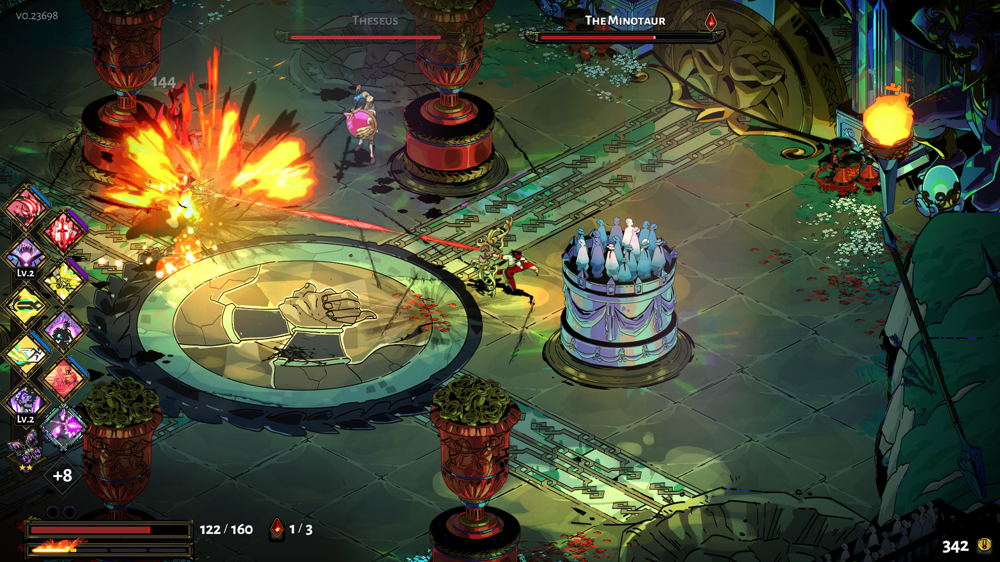
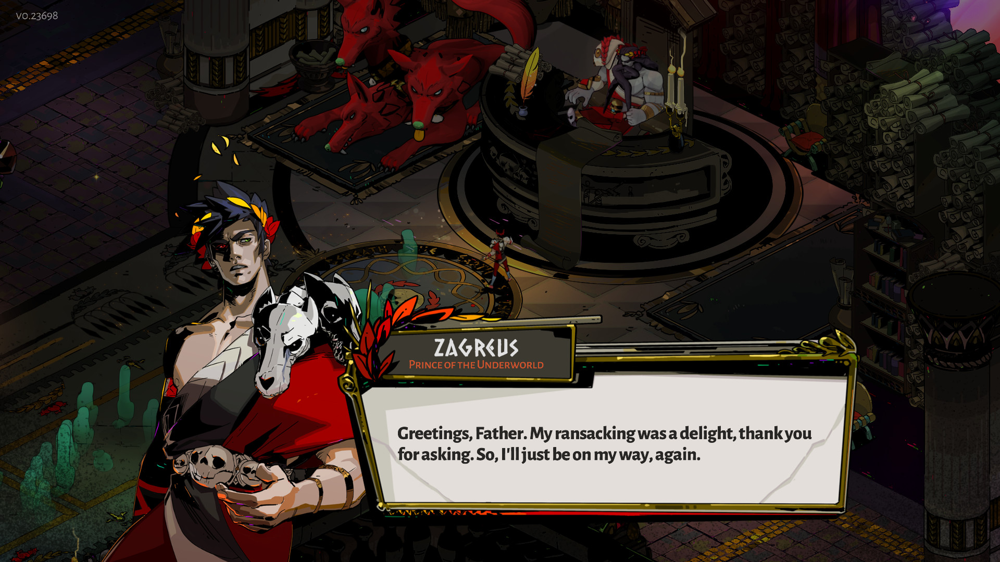

Trong bài này
Tầng 4 · Bài 04
Mổ xẻ game (deconstruction)
Ai cũng "cảm" được một game hay hay dở. Mổ xẻ là kỹ năng khác hẳn: biến thời gian ngồi chơi thành dữ kiện mà người khác kiểm chứng lại được.
Sau bài này bạn sẽ
- Áp dụng quy trình deconstruction có hệ thống
- Tách bạch quan sát và suy đoán khi mổ xẻ
- Viết một bài phân tích game ngắn
Hai người chơi hết cùng một game hành động trong một buổi tối. Người thứ nhất viết: "gameplay cuốn lắm, đánh đấm sướng tay." Người thứ hai viết: "con trùm chỉ hở sườn sau khi tung xong chuỗi ba đòn, nên đứng đúng chỗ quan trọng hơn bấm nút nhanh."
Cùng một game, cùng một buổi chơi. Khác nhau ở đúng một chỗ: người thứ hai có dữ kiện, người thứ nhất chỉ có cảm nhận. Câu đầu không sai, nhưng không dùng lại được vào việc gì. Câu sau chỉ ra một cơ chế cụ thể — ai đọc xong cũng chơi lại để kiểm chứng được.
Mổ xẻ là kỹ năng biến thời gian ngồi chơi thành vốn thiết kế dùng lại được. Bài này là quy trình để làm chuyện đó có hệ thống, thay vì chỉ ngồi "cảm" xem game hay ở đâu.
Mổ xẻ khác review và playtest chỗ nào
Ba hoạt động này hay bị gộp làm một vì cùng bắt đầu bằng "ngồi chơi game" — nhưng người làm, câu hỏi, và đầu ra sau đó khác nhau hoàn toàn.
| Review | Playtest | Mổ xẻ | |
|---|---|---|---|
| Ai làm và làm gì | Người chơi/nhà báo, đưa đánh giá cá nhân | Nhà thiết kế/QA, cho người khác chơi bản build để quan sát | Người thiết kế tự học, áp phương pháp công khai lên game đã ra mắt |
| Trả lời câu hỏi nào | Game này có hay không, có nên mua không | Cơ chế hoạt động đúng ý đồ không, chỗ nào gây bối rối | Vì sao cơ chế này tạo ra trải nghiệm đó |
| Đầu ra dùng để làm gì | Giúp người khác quyết định mua hay bỏ qua | Sửa bug, cân bằng một bản build cụ thể | Bài học thiết kế mang đi được, không gắn một bản build |
Thiếu một phương pháp công khai
Consalvo & Dutton mở đầu nghiên cứu của họ bằng nhận xét: Although the study of digital games is steadily increasing, there has been little or no effort to develop a method for the qualitative, critical analysis of games as "texts" (broadly defined). (dù nghiên cứu về game kỹ thuật số đang tăng đều, gần như chưa có nỗ lực nào xây dựng một phương pháp phân tích định tính, có phê phán, xem game như một dạng "văn bản" hiểu theo nghĩa rộng.) Đây là ranh giới: review dựa vào cảm nhận cá nhân, còn mổ xẻ cần một phương pháp người khác đọc xong áp lại được lên game.
Định nghĩa thực dụng cho bài này: mổ xẻ là rút bài học thiết kế mang đi được từ một game đã tồn tại, không phải để chấm hay hay dở. Thứ hay lộ ra nhất khi mổ là hành vi phát sinh — cách chơi người chơi tự nghĩ ra mà nhà thiết kế không lường trước.
Bốn lăng kính của Consalvo & Dutton
Consalvo & Dutton (Game Studies 2006) đề xuất bốn công cụ, mỗi công cụ soi một góc khác của cùng một game — dùng đúng lăng kính cho đúng câu hỏi quan trọng hơn dùng cả bốn.
| Lăng kính | Câu hỏi mồi |
|---|---|
| Object inventory | Vật phẩm này phục vụ hệ kinh tế nào trong game? |
| Interface study | Thông tin nào được cho thấy, thông tin nào bị giữ lại? |
| Interaction map | Chơi lại một lần nữa có mở ra nhánh nào khác không? |
| Gameplay log | Người chơi đang làm gì mà nhà thiết kế không lường trước? |
Hành vi phát sinh, nhìn qua gameplay log
Với gameplay log, họ dẫn một hành vi phát sinh nổi tiếng trong Grand Theft Auto 3 (Rockstar Games, 2001): người chơi ghép hai cơ chế rời thành một vòng lặp mà nhà làm game không thiết kế sẵn, chỉ lộ ra sau khi game ra mắt.
Quan sát và suy đoán
Đây là kỹ năng thật sự của mổ xẻ — sai một bước ở đây, cả bài phân tích sụp dù văn phong có hay đến đâu.
| Câu quan sát | Câu suy đoán |
|---|---|
| Người chơi phải đợi ba giây trước khi tung đòn kế tiếp. | Ba giây đó có thể vì nhà thiết kế muốn tạo nhịp căng thẳng trước khi ra đòn. |
| Thanh máu của trùm chia làm ba đoạn, mỗi đoạn đổi một kiểu tấn công. | Chia đoạn nhằm để người chơi cảm nhận được tiến độ trận đấu. |
| Cửa hàng hiện giá bằng tiền ảo, không hiện quy đổi ra tiền thật. | Cách đọc của tôi là giấu giá thật để giảm cảm giác đang tiêu tiền. |
| Sau khi thua, màn hình hiện nút "Thử lại" to hơn nút "Về menu". | Có thể đây là cách giữ người chơi ở trong vòng lặp chơi lại. |

Mẹo tự kiểm: câu quan sát dùng động từ trung tính — hiển thị, yêu cầu, giới hạn, chia. Câu suy đoán phải gắn dấu hiệu rõ — "có thể vì…", "nhằm để…".
Vì sao "designer làm X để Y" luôn chỉ là suy đoán
Van de Mosselaer & Gualeni (DiGRA 2020) cảnh báo: "stating that the intentions of the actual author are crucial when interpreting the meaning of a work would be an instance of the ‘intentional fallacy’ (Wimsatt and Beardsley 1946), as it ignores the ways in which readers independently ‘make meaning’ during their reading, and how free they are in the interpretation of the work." (cho rằng ý định thật của tác giả là yếu tố then chốt khi diễn giải ý nghĩa một tác phẩm sẽ là một dạng "intentional fallacy", vì cách hiểu đó bỏ qua việc người đọc tự "tạo ra ý nghĩa" trong khi đọc, và mức độ tự do của họ khi diễn giải tác phẩm) (khái niệm "intentional fallacy" gốc từ Wimsatt & Beardsley 1946, bài này trích lại qua DiGRA 2020, không đọc bản gốc 1946.)
Áp vào game: bạn không chạm được ý định thật của nhà thiết kế. Thứ bạn mô tả thật ra là một nhà thiết kế hàm ý — hình dung riêng dựng từ trải nghiệm chơi của bạn.
Thứ duy nhất nâng một suy đoán thành dữ kiện là bằng chứng bên ngoài game: GDC talk, postmortem, patch note, phỏng vấn nhà thiết kế — thiếu nó, suy đoán mãi mãi chỉ là suy đoán dù nghe hợp lý đến đâu.
Nhưng đừng hiểu nhầm là phải tránh suy đoán hoàn toàn — không thể. Department of Play nói thẳng: "Deconstruction is ultimately a process of interpretation and is often highly subjective." (mổ xẻ, xét cho cùng, là một quá trình diễn giải và thường mang tính chủ quan cao.) Vấn đề là luôn biết mình đang đứng ở đâu: quan sát hay suy đoán.
Quy trình 5 bước
- Chốt một câu hỏi trước khi bắt đầu — không mổ cả game cùng lúc. "Vì sao trận đấu với trùm A căng hơn trùm B" mổ được; "game này có gì hay" thì không.
- Mô tả tổng quan trước khi đi vào từng phần. Konzack cảnh báo phương pháp bottom-up dễ mất góc nhìn toàn cảnh: "Thus, in order to minimise this flaw we should make a general description of the computer game in question before analysis." (vì vậy, để giảm thiểu sai sót này, ta nên mô tả tổng quan trò chơi máy tính đang xét trước khi đi vào phân tích.)
- Chọn một hoặc hai lăng kính hợp câu hỏi, rồi ghi lại dữ kiện quan sát được — chưa diễn giải ở bước này.
- Diễn giải dữ kiện vừa ghi, nhưng đánh dấu rõ mọi câu diễn giải bằng cụm như "có thể vì…" — đây là bước suy đoán, không phải bước dữ kiện.
- Rút ra bài học mang đi được sang dự án khác — không phải kết luận chỉ đúng cho riêng game vừa mổ.
Nguồn của từng bước
Bước 1, 4, 5 là gợi ý thực hành do bài này tổng hợp. Bước 2 theo Konzack (2002); lăng kính ở bước 3 theo Consalvo & Dutton (2006).
Ba ví dụ, ba lăng kính
Ba game, ba thể loại, ba lăng kính — quy trình trên không chỉ hợp một dòng game.
The Sims (PC). Mổ bằng object inventory. Consalvo & Dutton đếm được hơn 400 vật phẩm khả dụng (gộp bản gốc và ba bản mở rộng), giá từ 10 đến 15.000 Simoleans. Chú ý cách tách hai loại câu ở đây: "giá trải từ 10 đến 15.000" là quan sát, còn "dải giá rộng vậy là để phân tầng người chơi theo mức đầu tư" là diễn giải của người mổ — viết chung một câu là lẫn ngay.
Hades (indie — Supergiant Games, 2020). Gợi ý mổ bằng interaction map: hội thoại của các nhân vật đổi theo số lần người chơi đã chết. Câu hỏi mồi hợp ở đây là chơi lại nhiều lần thì nhánh hội thoại mở rộng ra sao.

Clash Royale (mobile — Supercell, 2016). Gợi ý mổ bằng interface study: màn hình trận đấu hiện rõ thời gian, elixir, lá bài kế tiếp — nhưng không hiện tỉ lệ thắng ước tính hay sức mạnh tương đối giữa hai bên. Thông tin bị giữ lại cũng là một quyết định thiết kế, không kém quan trọng hơn thông tin được hiện ra.
Theo nguồn và phân tích minh hoạ
Case The Sims lấy số liệu từ Consalvo & Dutton (2006) — đã kiểm chứng. Case Hades và Clash Royale là phân tích minh hoạ do bài này tự làm, không phải kết luận có nguồn học thuật xác nhận.
| Lăng kính | Câu hỏi cần trả lời | Ví dụ trả lời trong bài |
|---|---|---|
| Object inventory | Vật phẩm này phục vụ hệ kinh tế nào trong game? | The Sims: hơn 400 vật phẩm khả dụng, giá từ 10 đến 15.000 Simoleans. |
| Interface study | Thông tin nào được cho thấy, thông tin nào bị giữ lại? | Clash Royale: hiện thời gian, elixir, lá bài kế tiếp — không hiện tỉ lệ thắng ước tính. |
| Interaction map | Chơi lại một lần nữa có mở ra nhánh nào khác không? | Hades: hội thoại nhân vật đổi theo số lần người chơi đã chết. |
| Gameplay log | Người chơi đang làm gì mà nhà thiết kế không lường trước? | GTA 3: người chơi ghép hai cơ chế rời thành một vòng lặp ngoài thiết kế ban đầu. |
Lens
Lăng kính Người mổ xẻ
- Tôi đang mổ để trả lời một câu hỏi cụ thể, hay đang mổ cả game một lượt?
- Tôi đã mô tả tổng quan trước khi đi vào chi tiết chưa?
- Mỗi câu suy đoán trong bài viết của tôi có đang được đánh dấu rõ là suy đoán không?
- Tôi có bằng chứng bên ngoài nào (GDC talk, patch note, phỏng vấn) cho câu suy đoán quan trọng nhất không?
- Câu nào trong bài viết của tôi người khác chơi lại game là kiểm chứng được? Câu nào thì không?
Dựng theo quy trình 5 bước ở trên, tổng hợp từ Consalvo & Dutton (2006) và Konzack (2002) — không trích nguyên văn.
Sai lầm hay gặp
Mổ cả game mà không có câu hỏi
Không chốt câu hỏi trước sẽ ra một bài liệt kê mọi thứ trong game, không đọng lại bài học nào.
Viết "designer làm X để Y" như sự thật
Trừ khi có bằng chứng bên ngoài, câu này luôn là suy đoán — viết bằng giọng khẳng định khiến người đọc tin nhầm cách đọc chủ quan là dữ kiện.
Mô tả how mà bỏ qua why
Liệt kê cơ chế hoạt động thế nào chỉ là nửa việc. Department of Play (nguồn ngành, không phải học thuật) viết: "it is often more helpful to explore not just how a game works on a functional level, but also why it works." (thường sẽ hữu ích hơn nếu không chỉ tìm hiểu game vận hành thế nào ở mức chức năng, mà còn vì sao nó vận hành được.)
Game thành công thì mọi phần đều đúng
Một game bán chạy không có nghĩa từng cơ chế trong đó đều đáng chép — thành công còn có thể đến từ marketing hay thời điểm ra mắt. Department of Play nhắc: "succeeding and understanding the success don’t always go together." (thành công và hiểu được vì sao thành công không phải lúc nào cũng đi cùng nhau.)
Chỉ chơi một lần nên không thấy nhánh
Interaction map cần nhiều lượt chơi mới lộ hết nhánh hội thoại — kết luận từ một lượt chơi duy nhất có thể chỉ đúng cho một nhánh, không phải toàn bộ hệ thống.
Thực hành
Viết một bài mổ xẻ ngắn
- Chọn một game bạn đã chơi và có thể chơi lại nhanh. Chốt một câu hỏi cụ thể muốn trả lời.
- Chọn một lăng kính hợp câu hỏi: object inventory, interface study, interaction map, hoặc gameplay log.
- Kẻ hai cột: "Quan sát" và "Diễn giải". Ghi 10 câu quan sát và 3 câu diễn giải vào đúng cột của nó.
- Viết khoảng 300 chữ theo quy trình 5 bước ở trên: câu hỏi, mô tả tổng quan, dữ kiện, diễn giải có đánh dấu, bài học mang đi được.
Xem gợi ý
Chọn game nhỏ, chơi lại nhanh được trong vài phút — game dài 40 giờ sẽ khiến bước chọn câu hỏi bị trì hoãn vô thời hạn. Nếu thấy khó tách hai cột, thử đọc to câu lên: câu nào có chữ "để", "nhằm", "vì muốn" thì gần như chắc chắn đang là suy đoán, không phải quan sát.
Tự kiểm tra
Câu nào dưới đây là câu SUY ĐOÁN, không phải câu quan sát?
B đúng: cụm "có thể vì" và việc gán mục đích cho nhà thiết kế là dấu hiệu của suy đoán. A, C, D đều mô tả những gì nhìn thấy trên màn hình bằng động từ trung tính (chia, đổi) — không gán ý định cho ai cả.
Câu hỏi mổ xẻ là "vì sao người chơi tiêu tiền thật vào vật phẩm X trong game". Lăng kính nào hợp nhất?
A đúng: object inventory kiểm kê vật phẩm theo chi phí, cách dùng và lựa chọn tương tác — đúng thứ cần để hiểu cấu trúc kinh tế đứng sau quyết định chi tiền. Interface study hợp cho câu hỏi về thông tin hiển thị, interaction map hợp cho lựa chọn với NPC, gameplay log hợp cho hành vi phát sinh.
Một game doanh thu rất cao. Kết luận nào đúng?
C đúng, đây là bẫy phổ biến nhất khi mổ xẻ game ăn khách. A và B rơi đúng vào cái bẫy đó. D sai vì mổ game thành công vẫn hữu ích, chỉ là không được mặc định mọi phần của nó đều là nguyên nhân thành công.
Điều gì có thể nâng một câu suy đoán thành dữ kiện?
D đúng — đây là nguồn duy nhất chạm được ý định thật của nhà thiết kế, thay vì suy luận từ chính trải nghiệm chơi của bạn. A, B, C đều không đổi bản chất: vẫn là suy đoán, chỉ được trình bày thuyết phục hơn.
Ôn nhanh
Chốt lại
Nhớ 3 điều
- 1 Mổ xẻ khác review ở chỗ có phương pháp công khai người khác áp lại được — chọn một lăng kính hợp câu hỏi, đừng mổ cả game.
- 2 Tách bạch quan sát và suy đoán: quan sát dùng động từ trung tính, suy đoán phải đánh dấu rõ và cần bằng chứng bên ngoài mới thành dữ kiện.
- 3 Game thành công không có nghĩa mọi cơ chế trong đó đều đúng — hiểu vì sao thành công là việc khác với việc thành công.
Đọc thêm
- Paper Game Analysis: Developing a methodological toolkit for the qualitative study of games
Đọc để lấy nguyên bốn công cụ mổ xẻ và hai ví dụ gốc (The Sims, GTA 3) — nguồn chính của cả bài này.
- Paper Computer Game Criticism: A Method for Computer Game Analysis
Đọc để thấy phương pháp 7 lớp bottom-up và lời cảnh báo của chính tác giả về việc mất góc nhìn toàn cảnh.
- Paper The Implied Designer and the Experience of Gameworlds
Đọc để hiểu vì sao gán ý định cho nhà thiết kế thật là một cái bẫy, và khái niệm "implied designer" thay thế nó thế nào.
- Bài viết Guide: How To Deconstruct Games Better
Góc nhìn ngành, không phải nghiên cứu học thuật — đọc để có lời khuyên thực dụng khi viết bài mổ xẻ đầu tiên.
- Sách Game Design Workshop
Đọc khi muốn mổ riêng phần luật của game — khung tám formal element (Players, Objectives, Procedures, Rules, Resources, Conflict, Boundaries, Outcome) là lựa chọn thay thế cho bốn lăng kính ở bài này.